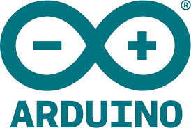

Recurso estudiantes carro
📆Semana 1: Conozco el ESP32 y lo conecto
Objetivos
-
Objetivo general: Reconocer el ESP32 como unidad de control para sistemas electrónicos y comprender cómo se energiza un motor con baterías.
-
Objetivos específicos: Identificar las funciones principales del ESP32. Realizar una conexión básica entre un motor y una fuente de energía. Aplicar un programa de prueba para observar un resultado físico.
Requisitos Previos
- Conocer conceptos básicos de electrónica.
- Familiaridad con la programación por bloques o en Arduino.
- Saber usar una computadora y manipular software educativo (Arduino IDE, mBlock, App Inventor).
- Comprender instrucciones técnicas y trabajen en equipo.
Desarrollo de competencias
Contexto
Herramientas
Arduino IDE

Simulador Wokwi

Monitor serial

Componentes
ESP32

Motor DC

Computadora portátil
Porta pilas

Baterías 18650

Actividades
Producto final
Obra publicada con Licencia Creative Commons Reconocimiento Compartir igual 4.0